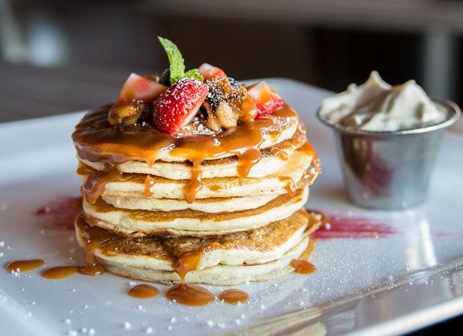
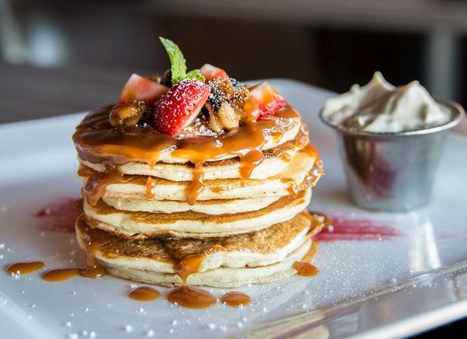

9:00 am
- Breakfast -
After walking the Bridge, it's Breakfast Time ! If you love pancakes as much as you love Venom, the perfect address is Outerlands. The best way to get there from the Bridge would be to get a uber and it's going to cost you around $4.
Just like Venom, their pancakes are out of this World :) I can literally wait for a whole hour in brunch line to eat one.
" Can we have the menu please ? " -> " Pouvons-nous avoir le menu ? "
" Can we have the addition please ? " -> " Pouvons-nous avoir l'addition ? "
10:30 am